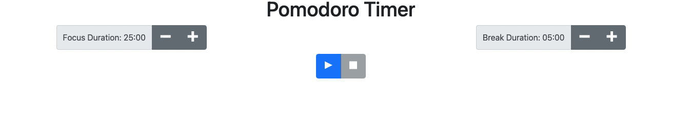

Front-end
The Pomodoro technique is a time-management method that was developed in the late 1980s by Francesco Cirillo. It involves using a timer to break down work into intervals, traditionally 25 minutes in length, separated by short breaks. Each interval is known as a pomodoro, which is the Italian word for tomato. (Cirillo used a tomato-shaped kitchen timer when practicing this technique as a university student.) For this project, you will implement a simplified version of Cirillo's original Pomodoro technique.